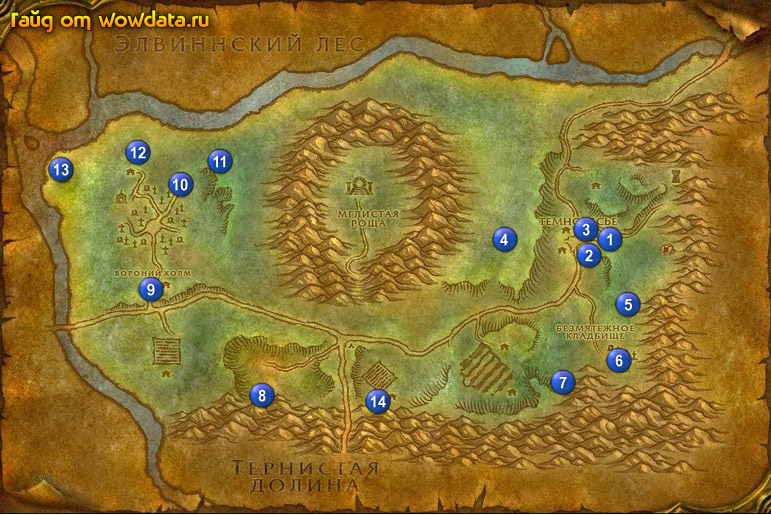

1) Идите в , и откройте пункт полета 1 (77, 44).
2) Идите на юг от пункт полета в дом 1 (79, 47) и начните <Взгляни на звезды>, затем купите [Бронзовая трубка] у гнома инженера 1 (78, 48), если она у него есть, иначе придется топать к аукциону или просить у других игроков, затем вернитесь назад и закончите квест. Начните <Взгляни на звезды>.
3) Пойдите по дороге вниз, в город и у большого дома 2 (75, 48) начните <Воргены в лесу>.
4) Войдите в этот дом и начните <Вороний холм>,<Отшельник> и <Припасы для Свена>.
5) Пройдите в дом через дорогу 3 (76, 45) и начните <Легенда о Сталване> и <Тотем наказания>.
6) Идите в гостиницу и сделайте Темнолесье своим домом.
7) Выйдите на улицу и справа начните <Ночной дозор>.
8) Закончите <Легенда о Сталване> в ратуше и проигнорируйте следующую часть.
9) Идите делайте <Воргены в лесу> на западе от Темнолесье, убивая Тенеткач Ночной Погибели 4 (64, 46).
10) Закончите <Воргены в лесу> в городе и начните <Воргены в лесу>, вернитесь обратно в долину 4 (64, 46)и убивайте Вестник Тьмы из стаи Ночной Погибели, их тут много в лагерях.
11) Идите и закончите в городе <Воргены в лесу>, начните <Воргены в лесу>.
12) Бегите в дом 5 (81, 59) и закончите <Взгляни на звезды>, начните <Взгляни на звезды>.
13) Делайте <Ночной дозор> и собирайте [Палец скелета] для <Тотем наказания> в Безмятежное Кладбище 6 (около 79, 70).
14) Тут возьмите [Зеркальце Мэри] для <Взгляни на звезды> из Невменяемый вурдалак (он чаще всего находится в церквушке, так как у него там респ).
15) Бейте мобов около и в пещере 7 (73, 73) для <Воргены в лесу>.
16) Вернитесь по руне в .
17) Около гостиницы закончите <Ночной дозор> и начните <Ночной дозор>.
18) Пройдите немного на восток и закончите <Воргены в лесу>, начните <Воргены в лесу>, затем идите в дом и закончите его.
19) Идите в дом южнее пункт полета и закончите <Взгляни на звезды>, начните <Взгляни на звезды>.
20) Остановитесь в долине огров 8 (33, 75) и убейте Ззарк'Вул (ходит по пещере и выходит наружу иногда) для <Взгляни на звезды>.
21) Остановитесь около 9 (18, 56), закончите <Вороний холм> и игнорируйте следующую часть.
22) Идите на кладбище и бейте скелетов для <Ночной дозор> и пауков для <Тотем наказания>.
23) Бейте вурдалаков (это ходячие куски мяса обмотаные в какойто хлам) в северной части кладбища 10 (22, 38) и собирайте с них [Клык вурдалака] для <Тотем наказания>.
24) Идите на северо-восток к 11 (28, 31) и закончите <Отшельник>, начните <Припасы из Темнолесья>.
25) Идите юго-запад и используйте крест 12 (17, 29) – начните <Выветренная могила>.
26) Бегите закончите <Припасы для Свена> 13 (7, 34), начните <Месть Свена>.
27) По руне вернитесь в город.
28) С правой стороны от гостиницы закончите <Ночной дозор> и начните
<Ночной дозор>.
29) Войдите в ратушу и закончите <Выветренная могила>, начните <Морган Ладимор>, закончите его при выходе из ратуши, игнорируйте <Мор'Ладим>.
30) Идите в дом восточнее гостиницы и закончите <Тотем наказания> и <Припасы из Темнолесья>, начните <Прядь призрачных волос>.
31) Идите в последний дом на востоке города и закончите <Взгляни на звезды>.
32) Идите в дом к Слепая Мери 5 (81, 59) и закончите <Прядь призрачных волос>, начните
<Гребень для Эвы>. Вернитесь в город и закончите его в доме к востоку от гостиницы 3 (76, 45) затем начните <Доставка ниток>.
33) Идите на ферму Свена и у бугра 14 (49, 77) закончите <Месть Свена> (использовав его), начните <Лагерь Свена>.
34) Идите в сарайчик на северо-востоке 11 (28, 32), закончите <Доставка ниток> и начните <Сок зомби>.
35) Спуститесь под землю 10 (23, 35) и бейте Распространитель чумы для <Ночной дозор>.
36) Теперь бегите снова к Свену 13 (7, 34), завершите <Месть Свена> и начните <Таинственный незнакомец>.
37) Вернитесь по руне в город.
38) Закончите <Сок зомби> в гостинице как только вы появились, игнорируйте следующую часть.
39) Закончите <Ночной дозор> справа от гостиницы.
40) Закончите<Таинственный незнакомец> в доме восточнее гостиницы и начните <Продолжение поисков незнакомца>.
41) Закончите его в ратуше, начните <Расспросы в таверне>. Закончите его в гостинице, и игнорируйте следующую часть.
42) Если вам посчастливилось найти [Старинная историческая книга] (падает из всех мобов в Сумеречный лес ) начните квест <Старый учебник истории> и летите в Штормград, где закончите квест в библиотеке (74, 7), затем начните <Южнобережье>.
43) Летите в Гавань Менетил и сядьте на корабль в Аубердин, летите в Ясеневый лес.